1Architecture diagram
Layers run top to bottom, from the clinical systems down to the data stores.

Every component is drawn as a single box; the high-availability model of each one is described in the full scenario 1. Open the interactive version (hover a node, follow a link, switch theme, export). Drawn with Archify from assets/diagrams/simplified.architecture.json.
2The three layers
Each layer is a separate network zone (VLAN). Traffic between zones is blocked by default and allowed only for the connections drawn in the diagram.
Clinical
The scanner, the PACS (dcm4chee) and the radiologist viewer. The path from the scanner to the viewer stays inside this layer.
AI inference
The Orthanc gateway, with the AI worker running inside it as a plugin, and the MONAI Label server on the GPU. The gateway is the only receiver of PACS exports and the only AI-side system that talks to the PACS. The layer is best-effort: if it stops, doctors read in normal order.
Data
Two stores shared by the PACS and the gateway: SeaweedFS holds the image files and PostgreSQL holds the indexes, each in its own bucket or database.
3Components
| Component | Layer | Role in this system |
|---|---|---|
| CT | Clinical | Sends the head scan as a DICOM study straight to the PACS |
| PACS (dcm4chee) | Clinical | The hospital's central image archive: receives studies from the scanner, serves them to the viewer over DICOMweb, holds the official clinical record and pushes selected series once to the gateway. Its configuration is kept in OpenLDAP on the same server |
| 3D Slicer (radiologist viewer, proposed) | Clinical | Desktop workstation with an ICH Triage Python module (assessment). Opens the series that have arrived while later ones are still coming and overlays the AI mask once it is ready; the doctor confirms or corrects it and diagnoses here |
| Gateway (Orthanc) | AI inference | Receives the series exported by the PACS, runs the AI worker as a plugin and returns the AI results to the PACS by C-STORE, so the AI holds no PACS credentials |
| AI worker | AI inference | Our code, running inside Orthanc as a plugin (ai_bridge.py in staging). It turns the series into one NIfTI volume, sends it to MONAI, and turns the returned mask into DICOM SEG and SR |
| MONAI Label server | AI inference | Runs the hemorrhage_approved model (the AI team's approved bundle) on every study and returns a mask with one label per subtype (proposed, Slicer + MONAI) |
| SeaweedFS | Data | Self-hosted object storage with an S3 interface; one bucket for the PACS image files and one for the gateway files |
| PostgreSQL | Data | Relational database holding the PACS index and the gateway index in separate databases |
4Flow 1 · CT to diagnosis
This path is the time a doctor actually waits, from the end of the scan to the first image on screen.
- The scanner sends directly to the PACSThe CT scanner sends the head scan to dcm4chee without any intermediate router, so no extra component can delay or block it.
DICOM C-STORE :11112 - The PACS stores the studyImage files go to SeaweedFS and the study index to PostgreSQL. The study becomes queryable as soon as its first instances are stored.
S3 · PostgreSQL :5432 - The doctor opens the study while it is still arrivingThe viewer can open a study while the scanner is still sending later series, so reading starts without waiting for the full transfer.
DICOMweb QIDO-RS / WADO-RS - The doctor decidesWhen the AI result is ready (Flow 2), the mask appears in the viewer on top of the study. The doctor confirms or corrects it and makes the diagnosis.
5Flow 2 · AI triage (push model)
The PACS decides what the AI receives and pushes it; the AI never reaches into the PACS.
- The PACS pushes the relevant seriesAn export rule in dcm4chee selects the CT series the AI needs and sends them to the gateway. If the gateway is down, dcm4chee queues the export and retries it.
DICOM C-STORE export - The gateway keeps a working copyOrthanc stores the series (files in SeaweedFS, index in PostgreSQL) and waits until the series is stable, that is, until no new instance has arrived for a set time.
stable-series event - The AI analyzes the scanThe AI worker inside the gateway converts the series to one NIfTI volume and sends it to MONAI Label, which returns the mask. The worker turns it into a DICOM SEG and a structured report (SR).
NIfTI in, mask out - Results go backThe mask (DICOM SEG) and the report (SR) return to the gateway, which sends them to the PACS by C-STORE. The viewer then shows them with the study.
DICOM C-STORE to the PACS
6What this view leaves out
The following parts belong to the full design and are omitted here because they do not change how a study reaches the doctor or the AI.
| Left out | Role in the full scenario 1 |
|---|---|
| AI research layer | Annotation, model training and the model registry, working only on de-identified copies kept in a separate research bucket. See Flow 3. |
| Identity (Keycloak) | Single sign-on with multi-factor login for the viewer and other clinical tools. |
| HIS / RIS | Sends orders to the PACS worklist over HL7 and receives the AI priority flag. |
| Cloud layer | Backup gateway, egress firewall and Object-Locked cloud buckets for long-term retention, database backups and restore. See Flow 4. |
| Detailed data layer | PostgreSQL standby with Patroni failover, replicated OpenLDAP drawn as a separate store, and the research bucket on SeaweedFS. |
| High availability | N+1 PACS nodes and active-active gateway nodes behind load balancers. See High availability. |